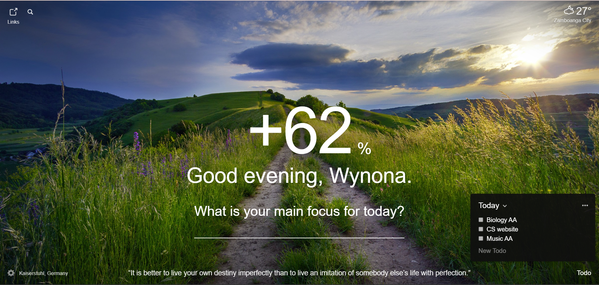
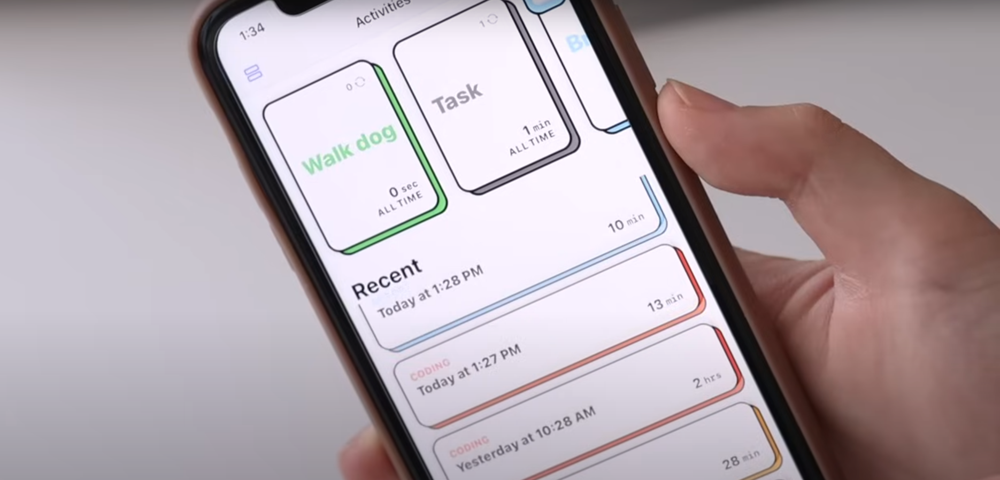
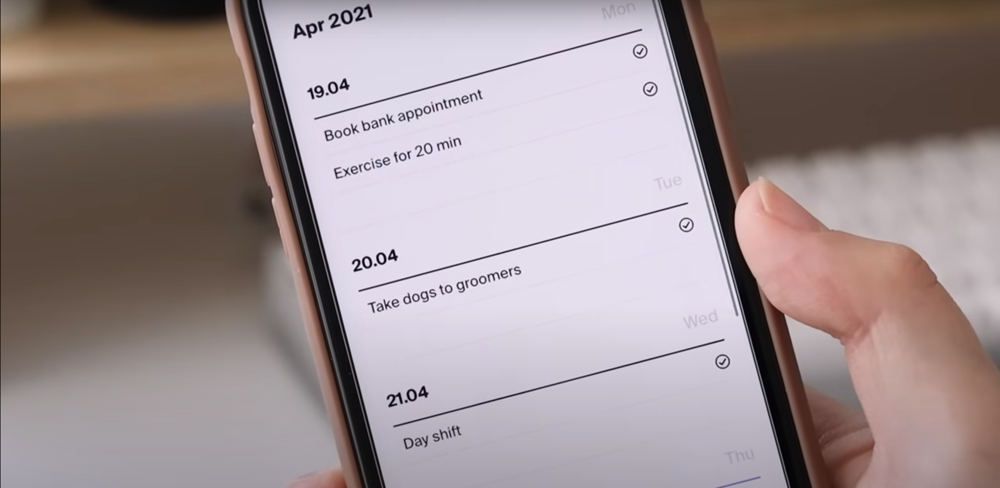
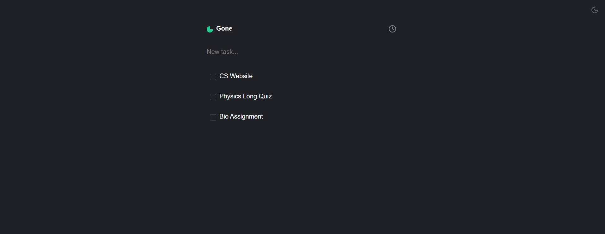
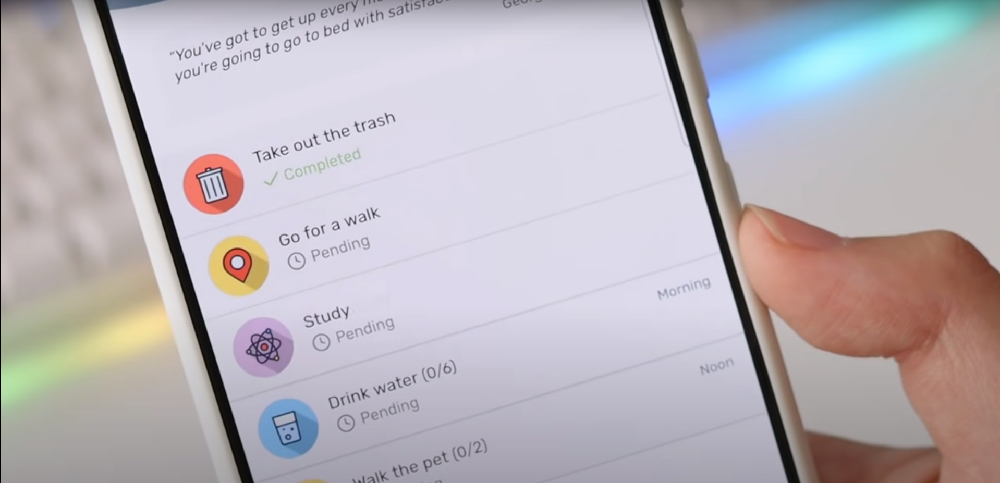
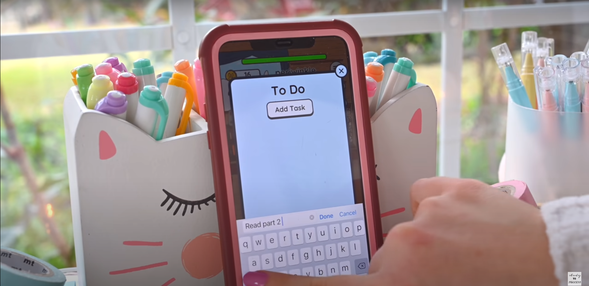

Momentum is a Website extension that replaces new tab page with a personal dashboard to help you get focused, stay organized, and keep motivated to achieve your goals 🤩 🤩 🤩. Achieve your goals faster and more consistently with your own personal dashboard. Featuring to-do lists, weather, daily photos, and encouraging quotes.

With its simple yet playful interface, it makes it easy to manually input your time or time yourself right then and there with a wonderful motivational quote each time. It also switches from light/dark mode to correspond with your phones personal settings 😍.

Tweek is a very simple weekly organizer with minimalist & aesthetic clear design like a paper planner. Intuitive simply organize your tasks, reminders and collaborate on them with your team or family. The app is super clean and to the point, so it's fast to enter tasks and check them off or move them around without getting distracted or stuck in the UI.

Gone is an ephemeral to-do list. All tasks will disappear within 24 hours of adding them. Complete your tasks each day before they go away. There is also a dark or light mode feature to adjust the display to your liking.

"Tusk" is a task planner and habit tracker. It helps you keep track of your daily tasks, develop good habits, and achieve your goals. The application allows you to keep a list of tasks for the day, build schedules, set notifications and track the execution of tasks on the calendar. You can choose colors and icons for your tasks from a rich and constantly updated set of images. There are also system reminders will help you not to miss the scheduled task.

Study Bunny is a cute tool designed to help you manage your work and study sessions in a fun and cute way. The idea behind Study Bunny is that you maintain consistent, focused study sessions that help you make the most of your study time. Organizing your workload into hours and targets will help you achieve your goals more easily. Study bunny is a lovely and cute way of staying motivated while you study, helping you to organize and plan out your to-dos and, as a result, make the most of your time and maximize your efficiency.